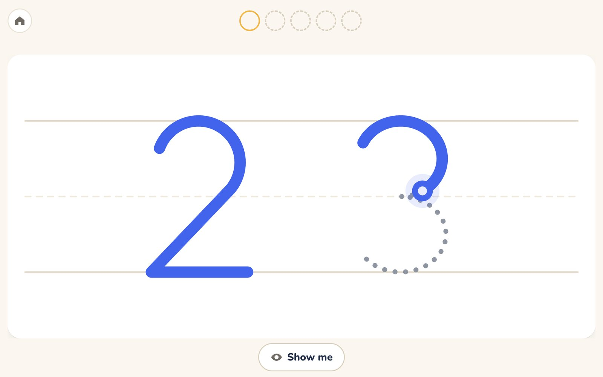
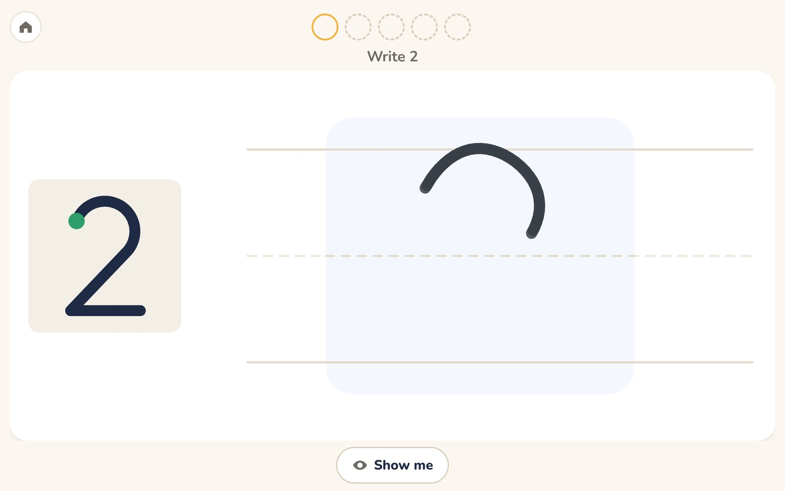
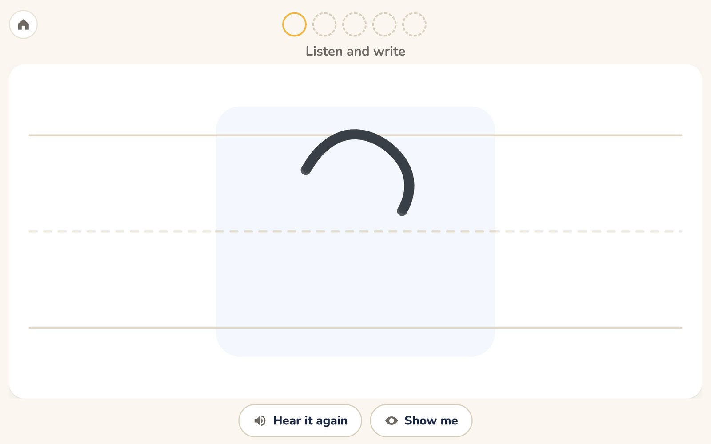

Overview
Four stages, 24 small steps

Stage 1 · Levels 1–14
Tracing on a road
He traces a thick grey road. Each level changes just one thing: size, room to wander, numbers per screen or the guide.

Stage 2 · Levels 15–17
Dotted outline
A thin dotted number, just like the printed practice sheet. It starts a little easier again.

Stage 3 · Levels 18–21
Copy the model
No path at all. He copies a model shown on the left, ending with four in a row at school-paper size.

Stage 4 · Levels 22–24
Hear it, write it
No model either. The voice says the number and he writes it from memory, ending with five in a row.
Scroll sideways to see all 24 levels
Bars show relative size and room to wander
Rules
How he moves between levels
Moves upAfter 5 turns averaging 8★ or more (out of 10)
Steps backAfter 3 turns averaging under 4★, so it stays fun
Only between sessionsNever in the middle of practice
You can chooseGrown-ups → Level → “I choose” fixes any level
The same at every level
- 1“Show me” demo of each stroke
- 2The voice says each number
- 3One picture with its spelling after each turn
- 4A star per turn and a calm “All done” ending
- 5Lifting mid-stroke starts the number again (a Grown-ups setting)
- 6Each new stage starts a little easier again
- 6Each new stage starts a little easier again
- 6Each new stage starts a little easier again